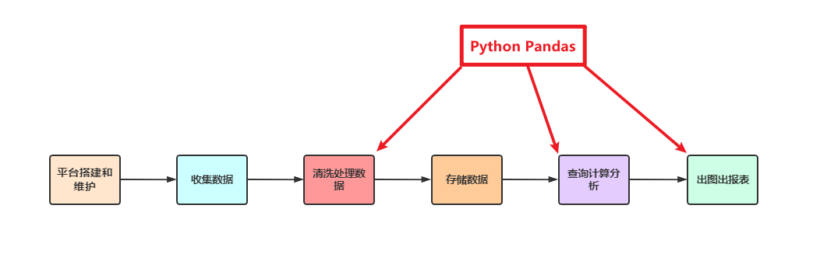

Python数据开发简介
学习目标
- 了解 Python 做数据开发的优势
- 知道 Python 数据开发常用开源库
1. 为什么要使用Python做数据开发
注意：这里的数据开发包含了数据分析以及大数据开发
1.1 Python在数据开发领域的优势
Python作为当下最为流行的编程语言之一，可以独立完成数据开发的各种任务：
- 语言本身就简单易学，书写代码简单快速
- 同时在数据分析以及大数据领域里有海量的功能强大的开源库，并持续更新
- Pandas：数据清洗、数据处理、数据分析
- Sklearn：机器学习、统计分析
- PySpark：Spark使用Python
- PyFlink：Flink使用Python
- Matplotlib、Seaborn、Pyecharts：数据可视化(出图表)
- ...
1.2 为什么要学习 Pandas
Python在数据处理上独步天下：代码灵活、开发快速；尤其是Python的 Pandas 开源库，无论是在数据分析领域、还是在大数据开发场景中都具有显著的优势：
- Pandas 是 Python 中的一个第三方数据分析开源库，也是商业和工程领域最流行的结构化数据工具集，用于数据清洗、处理以及分析
- Pandas 和 PySpark 中很多功能都类似，甚至使用方法都是相同的；当我们学会 Pandas 之后，再学习 PySpark 就更加简单快速
- Pandas在数据处理上具有独特的优势
- 底层是基于Numpy构建的，所以运行速度特别的快
- 有专门的处理缺失数据的API
- 强大而灵活的分组、聚合、转换功能
- Pandas 在整个数据开发的流程中的应用场景
- 在大数据场景下，数据在流转的过程中，Pandas 中丰富的API能够更加灵活、快速的对数据进行清洗和处理
- 数据量大到 excel 严重卡顿，且又都是单机数据的时候，我们使用 Pandas
- 在大数据 ETL 数据仓库中，对数据进行清洗及处理的环节使用 Pandas

1.3 其他常用Python库介绍
在数据分析、数据开发领域，除了 Pandas 还有其他常用的一些库，如下：
| 扩展包 | 简介 |
|---|---|
NumPy |
Python 中的一个开源数学运算库，运行速度非常快，主要用于数组计算 |
Matplotlib |
Matplotlib 是一个功能强大的数据可视化开源 Python 库 |
Seaborn |
Python 中的一个数据可视化开源库，建立在 Matplotlib 之上，并集成了 Pandas 的数据结构 |
Pyecharts |
基于百度的 echarts 的 Python 数据可视化开源库，有完整丰富的中文文 档及示例 |
Sklearn |
即scikit-learn，是基于 Python 语言的机器学习工具，经常用于统计分析计算 |
PySpark |
是 Spark 为 Python 开发者提供的 API，具有 Spark 全部的 API 功能 |
总结
- Python 可以独立完成数据开发的各种任务
- Pandas能够在数据分析和大数据开发场景中，对数据清洗、处理和分析等操作
- 常见的 Python 数据开发开源库：Pandas、Matplotlib、Seaborn、Pyecharts、Sklearn、PySpark等